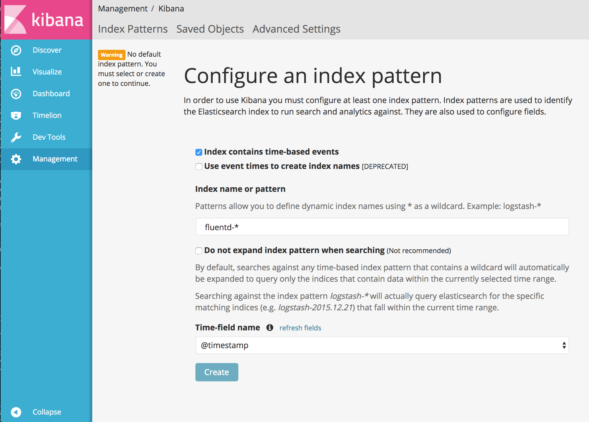
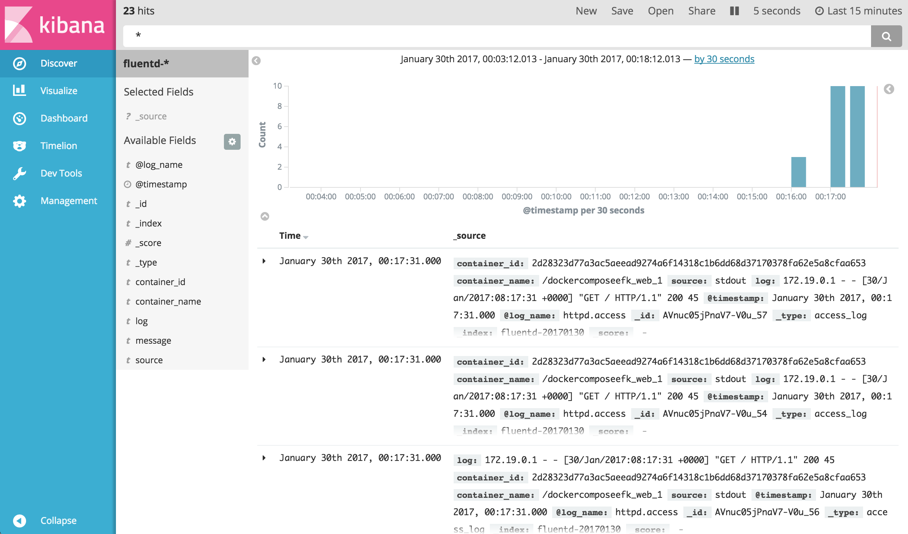

Elasticsearch is an open source search engine known for its ease of use. Kibana is an open source Web UI that makes Elasticsearch user friendly for marketers, engineers and data scientists alike.
By combining these three tools EFK (Elasticsearch + Fluentd + Kibana) we get a scalable, flexible, easy to use log collection and analytics pipeline. In this article, we will set up 4 containers, each includes:
All of httpd’s logs will be ingested into Elasticsearch + Kibana, via Fluentd.
Step 0: prepare docker-compose.yml
First, please prepare docker-compose.yml for Docker Compose. Docker Compose is a tool for defining and running multi-container Docker applications.
With the YAML file below, you can create and start all the services (in this case, Apache, Fluentd, Elasticsearch, Kibana) by one command.
version: '2'
services:
web:
image: httpd
ports:
- "80:80"
links:
- fluentd
logging:
driver: "fluentd"
options:
fluentd-address: localhost:24224
tag: httpd.access
fluentd:
build: ./fluentd
volumes:
- ./fluentd/conf:/fluentd/etc
links:
- "elasticsearch"
ports:
- "24224:24224"
- "24224:24224/udp"
elasticsearch:
image: elasticsearch
expose:
- 9200
ports:
- "9200:9200"
kibana:
image: kibana
links:
- "elasticsearch"
ports:
- "5601:5601"
loggingsection (check Docker Compose documentation ) ofwebcontainer specifies Docker Fluentd Logging Driver as a default container logging driver. All of the logs fromwebcontainer will be automatically forwarded to host:port specified byfluentd-address.
Step 1: Prepare Fluentd image with your Config + Plugin
Then, please preparefluentd/Dockerfilewith the following content, to use Fluentd’s official Docker image and additionally install Elasticsearch plugin.
# fluentd/Dockerfile
FROM fluent/fluentd:v0.12-debian
RUN ["gem", "install", "fluent-plugin-elasticsearch", "--no-rdoc", "--no-ri", "--version", "1.9.2"]
Then, please prepare Fluentd’s configuration filefluentd/conf/fluent.conf. in_forward plugin is used for receive logs from Docker logging driver, and out_elasticsearch is for forwarding logs to Elasticsearch.
# fluentd/conf/fluent.conf
<source>
@type forward
port 24224
bind 0.0.0.0
</source>
<match *.**>
@type copy
<store>
@type elasticsearch
host elasticsearch
port 9200
logstash_format true
logstash_prefix fluentd
logstash_dateformat %Y%m%d
include_tag_key true
type_name access_log
tag_key @log_name
flush_interval 1s
</store>
<store>
@type stdout
</store>
</match>
Step 2: Start Containers
Let’s start all of the containers, with just one command.
$ docker-compose up
You can check to see if 4 containers are running bydocker pscommand.
$ docker ps
CONTAINER ID IMAGE COMMAND CREATED STATUS PORTS NAMES
2d28323d77a3 httpd "httpd-foreground" About an hour ago Up 43 seconds 0.0.0.0:80->80/tcp dockercomposeefk_web_1
a1b15a7210f6 dockercomposeefk_fluentd "/bin/sh -c 'exec ..." About an hour ago Up 45 seconds 5140/tcp, 0.0.0.0:24224->24224/tcp, 0.0.0.0:24224->24224/udp dockercomposeefk_fluentd_1
01e43b191cc1 kibana "/docker-entrypoin..." About an hour ago Up 45 seconds 0.0.0.0:5601->5601/tcp dockercomposeefk_kibana_1
b7b439415898 elasticsearch "/docker-entrypoin..." About an hour ago Up 50 seconds 0.0.0.0:9200->9200/tcp, 9300/tcp dockercomposeefk_elasticsearch_1
Step 3: Generate httpd Access Logs
Let’s access tohttpdto generate some access logs.curlcommand is always your friend.
$ repeat 10 curl http://localhost:80/
<html><body><h1>It works!</h1></body></html>
<html><body><h1>It works!</h1></body></html>
<html><body><h1>It works!</h1></body></html>
<html><body><h1>It works!</h1></body></html>
<html><body><h1>It works!</h1></body></html>
<html><body><h1>It works!</h1></body></html>
<html><body><h1>It works!</h1></body></html>
<html><body><h1>It works!</h1></body></html>
<html><body><h1>It works!</h1></body></html>
<html><body><h1>It works!</h1></body></html>
Step 4: Confirm Logs from Kibana
Please go tohttp://localhost:5601/with your browser. Then, you need to set up the index name pattern for Kibana. Please specifyfluentd-*toIndex name or patternand pressCreatebutton.

Then, go toDiscovertab to seek for the logs. As you can see, logs are properly collected into Elasticsearch + Kibana, via Fluentd.

Conclusion
This article explains how to collect logs from Apache to EFK (Elasticsearch + Fluentd + Kibana). The example code is available in this repository.